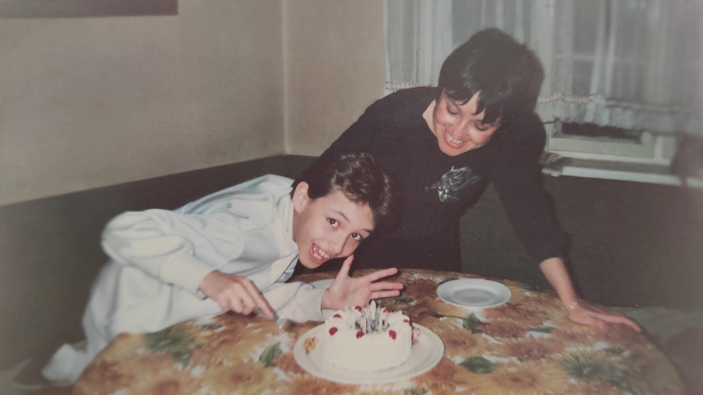
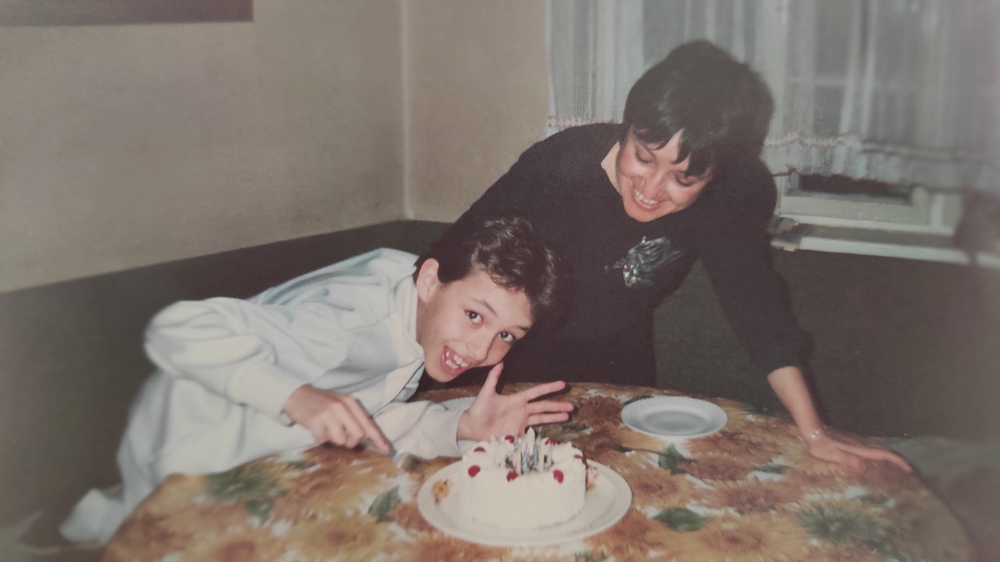

В памет на моята майка Ани
30.08.1959 - 28.01.2024

От мен
Никой не е подготвен за загубата на майка си. Никой не е подготвен да изгуби първия и най-скъп човек в живота си. Това е особено тежко, когато майка ти е един ангел небесен, който е слязъл на земята да прави добрини и да помага на всички около нея. Подобно на Спасителя на света тя слезе на земята и пое в себе си греховете на хората около нея и ги отнесе в небесата. Тя винаги ме обграждаше с щит от обич, и поемаше най-тежките товари за да мога аз да живея нормално и да стана човешко същество. Тази страница е посветена на тази изключителна жена и мъченица, която беше майка ми.
От верните приятели

СБОГОМ АНИ
Замина сам-самичка във небитието,
към мистичния небесен храм,
на всички взе частица от сърцето,
да ни дарява добрини от там!
Покрита със Божествени савани,
отпътува нашата прекрасна АНИ,
отиде си Човек - чист,свещен,
с ореол над нея като Ангел прероден!
Тя бе злато, диамант, Човек,
с оптимизъм гледаше напред,
понявга трудни пътища избираше,
несгодите във себе си прибираше!
АНИ бе красив коктейл, от най-
прекрасните човешки чувства,
обичаше семейството си без предел,
болерото на Равел - и класически изкуства!
Приятелка сърдечна, скъпа,
с душа огромна на Светица,
потопи ни в горка мъка,
литна като прелетна бездомна птица!
Загуби Варна личност - алтруист
душевността богата на артист,
Дама деликатна, благородна,
дори за чужди бе жертвоготовна!
От погледа и всичко просветлява,
орисана усмивки да дарява,
с непринудената си неземна доброта,
искаше да зарази света!
Ще питам вечно докато съм жив,
защо си Боже тъй несправедлив,
защо прибираш първо най - праведните,
а не прибираш духом бедните?!
Тъжно бие катдралната камбана,
земната Светиня АНИ вече я няма,
животът ни препуска като вятър,
като премиера на незрим театър!
Накрая пустош - облаци над гроба,
на цигулчица щурец засвирва,
а ний не чуваме унесени в тегоба,
на Орфей вълшебната му лира?!
Съдба, сълзи, тъга, забрава,
след време мъката ни отлетява,
ковчег, опело, дървен кръст,
цветя, венци и шепа пръст!

Обичам те мамо, ще ми липсваш вечно.
 
